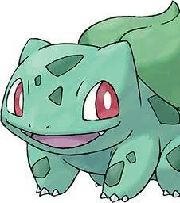

Bulbasaur resembles a small amphibian/frog, but it bears three claws on each of its feet and has no tail. It also has large, red eyes and small, sharp teeth. Its skin is a light, turquoise color with dark, green spots. It has three claws on all four of its legs. Its most notable feature, however, is the aforementioned bulb on its back, which according to its entry in the Pokédex, was planted there at birth. It also seems that it uses vines that grow out of its back as weapons, they are easily extractable. Each Bulbasaur has a "bulb" on its back that grows steadily larger as it matures. This bulb contains a seed which uses photosynthesis to supply Bulbasaur with energy. Its bulb is also used to store the energy that the seed absorbs, which can be used when it is necessary. It is assumed that when a Bulbasaur collects enough energy and sunlight in its bulb, it will evolve into an Ivysaur.The plants are able to become mobile by virtue of their active hosts, allowing them to move out of shaded areas and thus benefiting them as well.